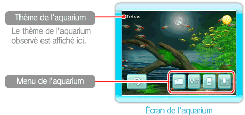

● Écran de l'aquarium
Pointez la manette Wii Remote en direction de l'écran pour faire apparaître le thème de l'aquarium, ainsi que le menu de l'aquarium. Pour ouvrir un des éléments du menu, placez le curseur dessus et appuyez sur .

Menu
Change Camera
(changer de caméra)
Changer le type ou l'angle de la caméra (voir p. 11).
Swim with a Mii (faire nager un Mii)
Faire entrer un personnage Mii™ dans l'aquarium pour le faire nager (voir p. 12).
Feed Fish (nourrir les poissons)
Nourrir les poissons.
Aquarium Settings (paramètres de l'aquarium)
Modifier les paramètres de l'aquarium (voir p. 13).